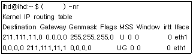
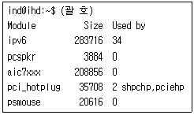
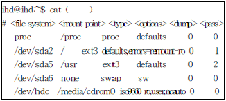
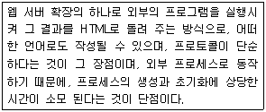
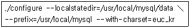
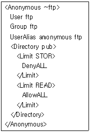
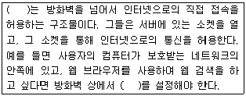
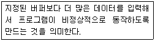
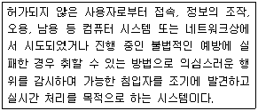

리눅스마스터-1급 (2008-03-16 기출문제)
1과목: 리눅스 실무의 이해
1. 운영체제의 유형을 구분짓는 주요 기능 중 다중사용자(Multi-user) 기능은 단일 프로세서 시스템에서 여러 사용자의 프로그램을 실행하는 기능을 일컫는다. 아래 보기 중 다중 사용자 기능을 제공하는 운영체제로 틀린 것은?
- Linux
- UNIX
- PC-DOS
- Windows XP
(정답률: 79%)

2. 다음 GNU/FSF에서 자유소프트웨어를 판단하는 기준으로 제시한 4가지 조건 중 알맞은 것은?
- 프로그램에 상업용 목적을 위한 배너광고를 게재할 수 있는 자유
- 이웃을 돕기 위해 이웃의 PC에 프로그램을 임의로 설치할 수 있는 자유
- 프로그램을 향상시키고 이를 공동체 전체의 이익을 위해서 다시 환원시킬수 있는 자유
- 프로그램의 작동 원리를 연구하고, 이를 저작권자의 필요에 맞도록 변경시킬 수 있는 자유
(정답률: 84%)
3. 다음 중 GNU/FSF에서 제시한 자유소프트웨어의 분류체계에서 자유소프트웨어 범주에 포함되는 소프트웨어로 알맞은 것은?
- 독점 소프트웨어
- 공용 소프트웨어
- 상용 소프트웨어
- 셰어웨어
(정답률: 65%)
4. 다음 중 리눅스 배포판으로 보기에 가장 거리가 먼 것은?
- RedHat
- Slackware
- Debian
- FreeBSD
(정답률: 77%)
5. 다음 중 리눅스가 글로벌 프로젝트 형식으로 지속적인 발전을 거듭하여 성공적인 운영체제로 자리 매김한 원인으로 틀린 것은?
- 공유와 나눔의 철학을 기반으로 한 소스코드 공개
- 기술의 폐쇄성을 무기로 독점적 지위를 누려온 일부 운영체제에 대한 다변화 요구
- 많은 소프트웨어 업체들의 적극적인 리눅스기반 소프트웨어 개발 및 지원
- 리차드 스톨만, 에릭 레이몬드의 리눅스에 대한 전폭적인 지지와 눈부신 상업적 성공
(정답률: 78%)
6. 다음 중 하드웨어 장치 약어와 내용이 틀린 것은?
- CPU : Command Processing Unit
- ALU : Arithmetic Logic Unit
- RAID : Redundant Array of Independent Disks
- SCSI : Small Computer System Interface
(정답률: 57%)
7. 부트 매니저(Boot Manager)란 부팅할 때 컴퓨터에 설치되어 있는 다양한 운영체제 중 본인이 필요로 하는 운영체제를 선택하여 부팅할 수 있도록 도와준다. 다음 중 부트 매니저가 아닌 것은?
- 리눅스의 LILO
- OS/2의 부트 관리 프로그램
- 윈도우즈 98의 msdos.sys
- 유닉스의 MBR
(정답률: 60%)
8. 대부분의 리눅스는 FHS(Filesystem Hierarchy Standard) 표준 파일 시스템 계층을 사용하고 같은 목적의 파일들은 일관된 장소에 모아 관리 한다. 다음 중 메일이나 뉴스, 프린터 큐 등과 같이 시스템상에서 캐시 상태에 있는 작업들을 위한 디렉토리로 알맞은 것은?
- /var/log
- /var/spool
- /var/tmp
- /var/cache
(정답률: 44%)
9. 분산파일시스템이란 LAN 등 네트워크상의 여러컴퓨터 간에 파일을 상호 공유하는 파일 시스템으로서 이를 사용하여 원격지의 컴퓨터에 있는 파일을 직접 판독 기록할 수 있다. 다음 중 분산 파일 시스템이 아닌 것은?
- ext3 (third Extended File System)
- NFS (Network File System)
- RFS (Remote File System)
- AFS (Andrew File System)
(정답률: 48%)
10. 다음 중 X 윈도우에 대한 설명으로 알맞은 것은?
- X 윈도우 시스템은 마이크로소프트의 윈도우즈 운영체제를 리눅스에서 가상으로 구동시키기 위한 프로그램이다.
- X 윈도우 시스템은 분산형 개방 시스템을 개발하기 위한 목적으로 수행된 아데나 프로젝트의 일환으로 MIT 에서 1984년 최초로 개발되었다.
- 윈도우 시스템에서 사실상 표준인 마이크로 소프트의 윈도우즈에 대항하기 위해 개발된 리눅스의 GUI 시스템이다.
- X 윈도우 시스템은 PC 상에서 사용될 수 있으며, 네트워킹을 지원하지 않는 단점을 가지고 있다.
(정답률: 52%)
11. Xlib는 X Protocol에 대한 저수준 라이브러리로서 보다 풍부한 기능을 활용하기 위해서는 Xtoolkit을 사용해야 한다. 다음 중 Xtoolkit이 아닌 것은?
- XView
- Qt
- XFree86
- GTK
(정답률: 50%)
12. 다음 중 리눅스에서 사용되는 쉘과 그 설명이 가장 알맞게 설명된 것은?
- Bourne Shell : 프로그램 이름은 sh 이며, 오랜 시간 동안 모든 유닉스 시스템의 표준 구성요소이지만 C쉘이나 콘 쉘과 비교해 보았을때 기능적인 면에서 미흡하다.
- C Shell : 프로그램 이름은 csh 이며, C 언어로 제작된 쉘로서 현재 리눅스 배포판에서 가장 많이 사용되고 있다.
- Bash Shell : 프로그램 이름은 bash 이며, csh 호환의 명령언어 해석기로서 현존하는 다양한 쉘중에서 가장 역사가 오래된 쉘이다.
- Korn Shell : 프로그램 이름은 ksh 이며, 사용이 편리하고 기능이 탁월한 장점이 있으나 명령행 편집기능을 제공하지 않고, c shell, bourne shell 등과 호환되지 않는 단점이 있다.
(정답률: 43%)
13. 다음 중 bash 쉘에서 사용되는 특수 문자와 그 설명으로 알맞은 것은?
- > 표준 출력을 파일 끝에 덧붙이는 출력 리다이렉션 기호
- ? 0개 이상의 문자와 일치하는 파일 치환 대표 문자 기호
- ; 어떤 프로세스의 출력을 다른 프로세스의 입력으로 보내는 파이프 기호
- < 파일로부터 표준 입력을 읽는 입력 리다이렉션 기호
(정답률: 58%)
14. 다음 중 프로세스들의 수행순서를 결정하는 프로세스 스케쥴링을 위해 고려되는 보편적인 기준으로 틀린 것은?
- 프로세스의 속성
- 신속한 응답 시간의 중요성
- 프로세스의 총 실행시간
- 서버의 부팅시간
(정답률: 75%)
15. 프로세스의 우선순위를 변경하기 위한 명령어로 알맞은 것은?
- nice
- nohup
- cron
- top
(정답률: 82%)
16. 다음 중 OSI 7 계층과 해당하는 프로토콜 연결이 알맞은 것은?
- Application Layer - FTP
- Presentation Layer - MAC
- Transport Layer - SLIP,PPP
- Physical Layer - RPC Portmapper
(정답률: 61%)
17. 다음 중 네트워크 장비의 하나인 허브에 대한 종류와 그 설명으로 틀린 것은?
- 더비 허브 : 가장 일반적인 허브를 의미하며 LAN이 보유한 대역폭을 PC의 대수만큼 나누어서 제공한다는 것이 약점이다.
- 스위칭 허브 : 더미 허브와 비교하여 스위칭 허브는 전용 매체 교환 기술을 이용하여 트래픽 병목 현상을 제거해 각 포트당 속도가 일정하게 보장된다.
- 스태커블 허브 : 허브 여러대를 묶어서 마치 하나의 허브처럼 확장시킬수 있는 허브를 의미 한다.
- 매니지먼트 허브 : 네트워크를 효율적으로 관리하기 위한 목적의 허브로서 프로토콜이 다른 통신망을 상호 접속시켜주는 기능을 가지고 있다.
(정답률: 49%)
18. 다음 중 LAN의 구성방식에 따른 분류로 보기에 알맞지 않은 것은?
- 이더넷
- TCP/IP
- 토큰링
- FDDI
(정답률: 56%)
19. 다음 중 리눅스에서 네트워크 상태 점검 및 환경 설정을 위한 명령어가 아닌 것은?
- ifconfig
- netconfig
- ping
- mkfs
(정답률: 70%)
20. 다음은 네트워크 설정을 확인하기 위한 명령어의 실행 결과이다. ( )안에 들어갈 명령어로 알맞은 것은?

- netstat
- ping
- traceroute
- nslookup
(정답률: 62%)
2과목: 리눅스 시스템 관리
21. 사용자가 로그인을 성공했을 때 보여줄 메시지를 저장하고 있는 파일로 알맞은 것은?
- /etc/motd
- /etc/messages
- /etc/profile.d
- /etc/login
(정답률: 52%)
22. 사용자 그룹에 대한 설명으로 틀린 것은?
- 사용자는 하나 이상의 그룹에 속하게 된다.
- 사용자 계정을 만들 때 자동으로 계정 이름과 동일 이름의 그룹이 생성되며 그 그룹에 소속 된다.
- 그룹의 정보는 /etc/groups 파일에 있다.
- groupadd 명령어를 사용하면 새 그룹을 만들 수 있다.
(정답률: 52%)
23. 명령어 who 옵션에 대한 설명으로 틀린 것은?
- -b : 마지막으로 부트한 시간을 출력한다.
- -r : 현재 runlevel의 값을 출력한다.
- -q : 호스트 이름과 사용자 목록을 출력한다.
- -u : 로그인 중인 사용자 목록을 출력한다.
(정답률: 54%)
24. 다음 중 /etc/default/useradd 파일에 설정하는 내용에 대한 설명으로 틀린 것은?
- GROUP : 기본 소속 그룹
- HOME : 홈 디렉토리의 베이스 디렉토리
- SKEL : 홈 디렉토리에 복사될 초기화 파일이 있는 디렉토리 이름
- EXPIRE : 지정된 시간동안 사용이 되지 않는다면 자동으로 로그 아웃됨
(정답률: 57%)
25. usermod 명령어의 옵션에 대한 설명으로 틀린 것은?
- -s : 계정이 종료될 날짜를 변경한다.
- -u : uid를 변경한다.
- -d : 로그인 디렉토리를 변경한다.
- -g : 그룹을 변경한다.
(정답률: 72%)
26. finger 명령어로 확인할 수 있는 정보가 아닌 것은?
- 사용자 로그인 이름
- 사용자 홈디렉토리
- 기본 사용 쉘
- 로그인한 이후의 경과시간
(정답률: 63%)
27. ihd라는 사용자를 일시적으로 로그인할 수 없도록 lock을 거는 명령어로 알맞은 것은?
- passwd -l ihd
- passwd -d ihd
- passwd -u ihd
- passwd -s ihd
(정답률: 68%)
28. dir 디렉토리 및 그 안에 있는 모든 파일과 디렉토리들의 소유자와 소유그룹을 nobody로 변경하기 위한 명령어로 알맞은 것은?
- chgrp -R nobody:nobody dir
- chown -R nobody nobody dir
- chown -R nobody:nobody dir
- chgrp -r dir nobody nobody
(정답률: 60%)
29. ls -l 명령어로 출력되는 정보 중에서 파일 유형을 나타내는 심볼이 있다. 다음 중 이에 대한 의미로 틀린 것은?
- - : 일반 정규 파일
- b : 블록 장치 파일
- d : 디렉토리
- l : 하드 링크
(정답률: 86%)
30. fsck 명령어의 종료값에 대한 설명으로 틀린 것은?
- 1 : 파일 시스템 에러가 고쳐짐
- 2 : 재부팅 필요
- 4 : 고쳐지지 않은 에러가 남아 있음
- 8 : 공유 라이브러리 에러
(정답률: 47%)
31. cp 명령어의 옵션에 대한 설명으로 틀린 것은?
- -a : 원본 파일의 속성(attribute)과 링크 정보를 그대로 유지하면서 복사
- -b : 동일한 파일이 존재하는 경우 원본 파일의 복사본을 만든다.
- -f : 동일한 파일이 존재하는 경우 복사하지 않는다.
- -u : 동일한 파일이 존재하는 경우 원본 파일과 비교하여 최신 날짜일 경우에 복사하지 않는다.
(정답률: 50%)
32. mount 명령어에서 -o 플래그에 사용되는 옵션에 대한 설명으로 틀린 것은?
- ro : 읽기 전용으로 마운트
- user : 모든 사용자가 사용이 가능함
- exec : 실행 파일의 실행이 가능함
- suid : Set-UID와 Set-GID의 사용을 허용함
(정답률: 46%)
33. ps 명령어에서 출력하는 필드의 의미에 대한 설명으로 틀린 것은?
- VSZ : 가상 메모리 크기
- TIME : 부트 이후의 경과 시간
- RSS : 실제 사용한 메모리 크기
- PPID : 부모 프로세스의 PID
(정답률: 47%)
34. 자식 프로세스를 만들기 위한 시스템 호출은?
- create
- new
- fork
- exec
(정답률: 64%)
35. runlevel을 사용하여 재부팅을 하기 위한 명령어로 알맞은 것은?
- runlevel 0
- runlevel 6
- init 0
- init 6
(정답률: 68%)
36. 다음은 kill 명령어로 보낼 수 있는 시그널이다. 프로세스를 종료시키는 시그널과 관련 없는 것은?
- SIGINT
- SIGKILL
- SIGTSTP
- SIGTERM
(정답률: 30%)
37. killall 명령어에 대한 설명으로 틀린 것은?
- killall은 지정된 명령어를 실행 중인 모든 프로세스에게 시그널을 보낸다.
- 시그널은 이름이나 숫자로 지정한다.
- 자기 자신을 종료시킬 수도 있다.
- 시그널 이름이 지정되지 않으면 SIGTERM이 보내진다.
(정답률: 35%)
38. rpm 명령어의 옵션에 대한 설명으로 틀린 것은?
- --nodeps : 의존성 검사를 하지 않는다.
- --test : 실제 설치를 하지 않고 설치가 성공 할 지를 검사한다.
- -h : 도움말을 보여준다.
- --percent : 설치 상황의 진행률을 보여준다.
(정답률: 42%)
39. tar 명령어의 옵션에 대한 설명으로 틀린 것은?
- -x : 묶음 파일에서 파일을 삭제한다.
- -c : 새로운 묶음 파일을 만든다.
- -t : 묶음 파일의 내용을 보여준다.
- -z : 묶음 실행과 동시에 gzip으로 압축한다.
(정답률: 65%)
40. gcc 옵션에 대한 설명으로 틀린 것은?
- -c : object 파일을 생성한다.
- -L : 라이브러리와 링크한다.
- -D : 매크로를 지정한다.
- -I : 헤더 파일 위치를 지정한다.
(정답률: 18%)
41. 다음 중 커널에 대한 설명으로 알맞은 것은?
- 커널에는 인터럽트 처리기와 스케줄러, 슈퍼바이저 등이 포함되어 있다.
- 모든 종류의 응용 프로그램과 유틸리티에 대해 GUI를 사용할 수 있는 기본 플랫폼을 제공하는 클라이언트/서버 시스템이다.
- 운영체제가 파일을 시스템의 디스크상에 구성하는 방식을 말한다.
- 넓게는 컴퓨터 시스템내의 각종 자원들을 요구하고 할당받을 수 있는 개체로 정의되며 PCB(Process Control Block) 영역에 할당받아 관리된다.
(정답률: 49%)
42. 다음 중 리눅스 커널을 지속적으로 업그레이드 및 컴파일을 해야 하는 이유로 알맞은 것은?
- 사용자 계정 생성, 삭제 등의 계정 관리 수행
- 주기적으로 효율적인 서버 백업 수행
- 새로운 하드웨어 지원, 시스템 관리 능력 및 속도 개선
- 라이선스 만료에 따른 사용기간 연장
(정답률: 60%)
43. 다음 중 커널 컴파일시 사용되는 명령어와 그 설명으로 알맞은 것은?
- make clean : 이전에 수행했던 커널 컴파일 과정에서 생성된 목적 파일, 커널, 임시파일, 설정값등을 삭제한다.
- make bzImage : 잘 못되었을 경우 이전 상태 복원을 위하여 현재 운영중인 시스템 이미지를 생성하는 명령어이다.
- make modules_install : 커널 환경 설정에서 모듈로 설정한 기능들을 컴파일한다.
- depmod : 커널 이미지를 담고 있는 RPM 패키지의 의존성 관계를 검사한다.
(정답률: 40%)
44. 다음은 현재 커널상에 로드된 모듈 목록을 출력하는 명령어의 수행결과중 일부이다. ( )안에 들어갈 명령어로 알맞은 것은?

- rmmod
- insmod
- lsmod
- modinfo
(정답률: 60%)
45. 다음 중 리눅스 커널 모듈에 대한 설명으로 알맞은 것은?
- 커널 모듈을 운영중인 커널에 로딩하기 위해서는 시스템 재부팅이 필요하다.
- 커널 모듈을 커널 자신이 필요로 할때 커널 데몬에게 모듈을 로드 또는 언로드 할 것을 요구할 수도 있다.
- 일반적으로 커널 모듈은 커널 코드보다 한단계 낮은 권한과 책임을 가지며, 커널은 커널 모듈의 위험 요소로부터 보호 기능을 갖추고 있다.
- 커널 모듈에 대한 컴파일은 단일 사용자 모드인 run level 1에서만 가능하다.
(정답률: 44%)
46. 다음 중 운영중인 시스템의 일부 하드웨어 장치가 갑자기 작동하지 않을 경우 확인해 보아야 하는 사항으로 틀린 것은?
- 해당 장치의 연결 상태 및 고장 여부
- 해당 장치와 관련된 리눅스 커널 모듈의 커널 적재 상태
- 해당 장치를 사용하는 프로세스 상태 및 커널 메시지 로그
- 해당 장치와 관련된 커널 모듈의 컴파일 여부
(정답률: 63%)
47. 다음은 시스템의 파티션 설정을 확인하기 위한 설정 파일을 출력한 결과이다. ( )안에 들어 갈 설정 파일 이름으로 알맞은 것은?

- /etc/fstab
- /sbin/lilo
- /etc/environment
- /etc/inittab
(정답률: 80%)
48. 다음 중 리눅스 부팅디스켓을 만들기 위해 플로피 디스크를 포맷하는 명령어로 알맞은 것은?
- mkfs.ext3 /dev/fd0
- fsck.ext3 -f /dev/hdb1
- mount -t ext3 /dev/fd0 /mnt
- mkbootdisk --device /dev/fd0
(정답률: 65%)
49. 다음중 리눅스 시스템상에 연결된 프린터들의 설정을 가지고 있는 설정 파일로 알맞은 것은?
- /etc/service
- /etc/printcap
- /etc/inetd.conf
- /usr/local/etc/sane.d/dll.conf
(정답률: 67%)
50. 다음 중 프린터 관련 명령어와 관련이 없는 것은?
- lpq
- printconf
- printenv
- lprm
(정답률: 59%)
51. logrotate 명령어의 설명으로 틀린 것은?
- 특정 날짜 또는 특정 용량 이상이 되었을 때 로그 파일을 rotate한다.
- rotate 작업을 하면서 로그 파일을 압축할 수 있다.
- 로그 파일이 비어있다면 rotate하지 않고 에러를 지정된 메일 주소로 보낸다.
- rotate 후에 생성되는 파일의 소유자와 허가권을 설정할 수 있다.
(정답률: 52%)
52. 다음 중 로그 파일의 설명이 틀린 것은?
- /var/log/messages : syslogd의 로그
- /var/log/dmesg : 사용자 로그인의 로그
- /var/log/mailog : sendmail의 로그
- /var/log/boot.log : 부팅시의 로그
(정답률: 69%)
53. 실행 중인 xinetd의 프로세스 번호(pid)가 저장 되어 있는 파일은?
- /var/log/xinetd.pid
- /var/run/xinetd.pid
- /var/xinetd/pid
- /var/log/xinetd/pid
(정답률: 25%)
54. syslogd와 관련있는 파일이 아닌 것은?
- /sbin/syslogd
- /etc/syslog.conf
- /etc/rc.d/init.d/syslog
- /var/syslogd/messages
(정답률: 54%)
55. PAM의 구성 파일에서 사용하는 토큰 중에서 모듈을 이용하는 인증이 실패한 경우 인증을 거부하기 위해 사용하는 토큰은?
- requisite
- required
- sufficient
- control
(정답률: 33%)
56. 파일의 무결성을 검사하기 위해 사용하는 프로그램은?
- file
- tripwire
- sudo
- ar
(정답률: 66%)
57. 다음중 COPS의 실행 파일이 아닌 것은?
- root.chk
- home.chk
- password.chk
- dev.chk
(정답률: 28%)
58. 백업 정책에 대한 설명으로 틀린 것은?
- 자료의 중요도에 따라 다른 백업 전략을 취한다.
- 백업을 한 후에 백업 테이프에 쓰기 방지를 해둔다.
- 중요한 백업 자료에는 암호화를 해둔다.
- 백업 테이프는 빠른 복구를 위해 컴퓨터가 있는 장소에 보관한다.
(정답률: 73%)
59. 백업 계획을 세우기 위해 반드시 고려해야할 요소가 아닌 것은?
- 시스템의 전체 용량
- 백업하기 위해 필요한 예산
- 사용할 백업 명령어
- 백업 기기의 종류
(정답률: 34%)
60. cpio의 옵션에 대한 설명 중 틀린 것은?
- -u : 동일한 파일 이름이 있는 경우 파일 복사를 취소한다.
- -o : 디스크로부터 보관(archive) 파일로 파일을 복사한다.
- -d : 디렉토리를 지정한다. -o와 같이 사용할 수 없다.
- -i : 보관 파일에서 파일을 디스크로 추출한다.
(정답률: 38%)
3과목: 네트워크 및 서비스의 활용
61. 다음 설명 내용 중 틀린 것은?
- 최초의 브라우저는 넥스트(Next) 플랫폼에서 발표되었다.
- HTML의 표준은 W3C 컨소시엄에서 주관하고 있다.
- 최초의 상업용 브라우저는 Netscape 이다.
- HTML의 초기 버전은 동적인 미디어 및 대용량의 자료를 표현하기 위하여 사용되었다.
(정답률: 66%)
62. 다음이 설명하는 것은 무엇인가?

- 자바 서블릿
- CGI
- DHTML
- XML
(정답률: 59%)
63. 웹 호스팅 서비스에서 사용하는 아파치 웹 서버의 주소 기반 가상호스팅 (IP-based Virtual Hosting)에 대한 설명으로 틀린 것은?
- http.conf 파일 안에서 NamevirtualHost 항목을 주석 처리한다.
- IP 주소 한 개로 여러 도메인을 사용할 수 있는 방법으로 각각의 도메인들에 개별적으로 ServerName, DocumentRoot, CustomLog 등을 설정할 수 있다.
- 사설 IP를 사용하고 있는 인트라넷 환경에서 적합한 방법이다.
- 사용하는 랜카드에 ifconfig와 route를 이용하여 가상의 IP를 추가 설정해야 한다.
(정답률: 11%)
64. 다음 아파치 설치 디렉토리에 대한 설명 중 틀린 것은?
- /bin : 아파치의 구동에 필요한 시스템 파일 및 라이브러리가 들어 있다.
- /conf : 아파치 서버의 여러 가지 설정 파일들이 들어 있다.
- /icons : 아파치 서버에서 사용되는 아이콘들이 들어 있다.
- /cgi-bin : 아파치 서버에서 구동 되는 CGI 스크립트 또는 바이너리가 들어 있다.
(정답률: 53%)
65. 아파치 설정 파일에서 웹문서의 기본 경로를 설정해주는 지시자로 알맞은 것은?
- ServerRoot "/usr/local/apache/htdocs"
- DocumentRoot "/usr/local/apache/htdocs"
- HttpdRoot "/usr/local/apache/htdocs"
- HttpdDocs "/usr/local/apache/htdocs"
(정답률: 57%)
66. SSL(Secure Sockets Layer)에 대한 설명으로 틀린 것은?
- SSLCertificateKeyFile은 보안 가상 호스트 설정시 비밀 키 이름과 그 위치를 아파치에게 알려주는 역할을 한다.
- SSL은 TCP와 응용계층 사이에 존재하는 표현계층 서비스로 플랫폼과 어플리케이션에 독립적이다.
- SSL은 기본적으로 443번 포트를 사용한다.
- SSL은 클라이언트가 최초 서버 접속 시 서버의 대칭키를 받아서 인증한 후 최종적으로 메시지는 RPC를 통해 공개키를 이용하여 암호화한 후 주고 받는다.
(정답률: 32%)
67. 다음 중 PostgreSQL의 특징이 아닌 것은?
- 고수준의 확장 가능한 관계형 DBMS가 가지고 있는 거의 모든 기능을 지원한다.
- 사용자 정의 오퍼레이터와 타입, 함수, 엑세스 메서드를 지원한다.
- 상속, 객체와 같은 객체 지향에서 볼 수 있는 특징을 구현하고 있다.
- Postgres에서 파생되어 MIT에서 개발 되었다.
(정답률: 34%)
68. 다음은 MySQL의 소스컴파일 설치 과정 중 한 부분이다. 이와 관련된 설명으로 틀린 것은?

- --prefix=/usr/local/mysql는 MySQL이 설치될 홈 디렉토리를 지정하는 옵션이다.
- --localstatedir=/usr/local/mysql/data는 MySQL의 데이터들을 /usr/local/mysql/data에 저장 시키기 위한 옵션이다.
- --with-charset=euc_kr는 MySQL에서 한글사용을 가능하게 해주는 옵션이다.
- 이 작업의 결과 /usr/local/mysql/data에 mysql과 test 두 개의 데이터베이스가 생성된다.
(정답률: 62%)
69. 클라이언트가 삼바서버에 접속할 때 부여하는 인증 레벨에 대한 설명으로 알맞은 것은?
- share : 사용자 계정 인증정보 처리를 윈도우 NT 도메인에서 처리하는 방식이다.
- user : 기본 보안정책으로 사용자 패스워드를 통해 삼바 서버에 접근하는 모델이다.
- server : 사용자가 요청한 자원을 연결해 주기전에 서버에 로그온하기 위한 사용자 패스워드 인증을 거치지 않는다.
- domain : 기본적으로 user 모드와 동일하나 사용자 계정의 인증 처리를 다른 서버를 통해 처리하는 방식이다.
(정답률: 32%)
70. 삼바 서버의 보안 모델은 크게 4가지가 있다. 아래의 설명 중 틀린 것은?
- 사용자 레벨의 경우 UNIX쪽과 PC쪽의 계정 이름과 동일한 사용자가 대다수일 때 그 위력을 발휘한다.
- 사용자 레벨에서 암호화된 암호파일을 사용하여 인증하도록 하려면 Security Options의 encrypt passwords를 yes로 설정하는 동시에 Security Options의 smbpasswd 파일을 설정해야 한다.
- 공유 레벨은 프린트, CD-ROM, anonymous ftp등의 공유 디렉토리를 불특정 사용자들이 공유할 경우 유용하다.
- 사용자 레벨보다 공유 레벨이 관리가 어렵고 성능은 우수하다.
(정답률: 63%)
71. 삼바(samba)서버의 설정 파일에서 주석으로 사용 할 수 있는 것은 다음 중 어느 것인가?
- # ...
- * ...
- : ...
- /% ... %/
(정답률: 69%)
72. 다음 /etc/exports 파일의 옵션 설명 중 틀린 것은?
- no_root_squash : 클라이언트에서 루트를 서버상의 nobody 사용자로 매핑
- ro : 공유된 자원을 읽기 전용으로 마운트
- insecure : 인증되지 않은 액세스도 가능하게 함
- link_relative : 절대 심볼릭 링크를 상대 심볼릭 링크로 변경시 사용
(정답률: 59%)
73. 다음 NFS 유틸리티에 대한 설명 중 알맞은 것은?
- nfsstat : NFS를 벤치마크하기 위한 프로그램인데, 시간당 부하의 수, 전송률, 실패율등 NFS에 관련된 데이터를 제공한다.
- showmount : mount 데몬에 NFS 서버에 대하여 질의를 하여 사용중인 상태를 표시한다.
- nfsmount : NFS 서버의 마운트 정보를 보여주는 유필리티이다.
- nhfsstone : NFS 서버와 클라이언트 동작 상태를 보여주는 유틸리티이다.
(정답률: 14%)
74. Proftpd의 설정파일에서 Limit는 하나 또는 둘 이상의 FTP명령어들을 제한을 하기 위하여 사용된다. Limit를 통해 제한하는 명령어들에 대한 설명 중 틀린 것은?
- CWD : 디렉토리를 변경하는 경우
- RETR : 서버에서 클라이언트로 파일을 전송하는 경우
- RNTO : 클라이언트가 서버로 파일을 전송하는 경우
- RNFR : 디렉토리의 이름을 바꾸는 경우
(정답률: 44%)
75. 다음은 ProFTPD 서버의 설정파일 proftpd.conf의 일부이다. 다음 익명 사용자에 대한 설정 내용에 대한 설명으로 틀린 것은?

- 익명 사용자 anonymous로 접속을 하면 ftp라는 사용자 ID의 권한으로 접속이 되는 것이다.
- 익명 사용자 anonymous는 ftp라는 그룹 권한을 갖는다.
- 홈디렉토리 하위의 pub디렉토리에 업로드가 가능하다.
- 홈디렉토리 하위의 pub디렉토리에 접근이 가능하다.
(정답률: 60%)
76. 다음 sendmail의 환경 설정 파일에 대한 설명 중 틀린 것은?
- sendmail.cf : sendmail의 환경 설정 중 가장 중요한 파일로, sendmail은 메일을 보내고 받을 때 마다 sendmail.cf 파일을 해석하여 실행을 한다.
- local-host-names : sendmail 8.9.x 버전에서는 sendmail.hn 으로 이름이 명명 되었다.
- aliases 및 aliases.db : 메일링 리스트를 운영 할 때 또는 특정 ID로 들어오는 메일을 여러사람들에게 전달할 때 사용된다.
- access 및 access.db : 각종 접근 설정이 저장되는 파일이다.
(정답률: 50%)
77. 다음 중 설명이 올바르지 않은 것은?
- MUA : 사용자들이 메일을 보기 위해 사용하는 프로그램
- MTA : 한 호스트로부터 메일을 받아 다른 호스트로 메일을 전달하는 역할을 한다.
- MDA : 수신된 메시지를 해당 사용자의 메일 박스에 저장해 주는 역할을 한다.
- MCA : 다른 호스트로 메일을 중계하는 역할을 한다.
(정답률: 52%)
78. 다음 중 SMTP(Simple Mail Transfer Protocol)의 특징에 대한 설명 중 틀린 것은?
- TCP/IP의 상위층 응용 프로토콜의 하나이다.
- 인터넷에서 전자 우편 기능을 사용하는 프로토콜로 사용된다.
- RFC 822에 규정되어 있다.
- 최근에는 그림과 소리를 메일 메시지에 포함 시킬 수 있다.
(정답률: 43%)
79. sendmail은 기본적으로 스팸메일 방지기능을 가지고 있다. 이 기능을 사용하기 위해서는 sendmail.cf 파일에 하나의 옵션만 넣어주면 된다. 이 옵션을 사용하게 되면 EXPN과 VRFY 명령어를 제한 하게 되고, 이 결과 VERB 명령도 제한되게 된다. 위에 설명한 옵션으로 알맞은 것은?
- spamOptions=authwarnings, goaway
- relayOptions=authwarnings, goaway
- privacyOptions=authwarnings, goaway
- securityOptions=authwarnings, goaway
(정답률: 41%)
80. sendmail은 스패머들로부터 메일서버를 보호하기 위한 최소한의 접근제어를 /etc/mail/access 파일을 통해서 하고 있다. 다음 메일의 Relay에 대한 설정 및 이에 대한 설명으로 틀린 것은?
- OK - 지정된 호스트나 사용자에게는 무조건 메일 수신
- REJECT - 지정된 도메인의 모든 메일을 송수신 거부
- DISCARD - 지정된 도메인에게서 메일을 받아 모두 폐기
- 550 - 지정된 메일 주소와 일치하는 메일 수신 거부
(정답률: 50%)
81. 슈퍼 데몬에 대한 설명으로 틀린 것은?
- 인터넷 서비스에서 여러 개의 데몬을 함께 관리 한다.
- 슈퍼 데몬은 클라이언트의 요구로부터 각각의 서비스를 구분하기 위해 Process ID를 이용한다.
- /etc/xinetd.conf에 포함된 여러 개의 데몬은 독자적으로 실행되지 않고 슈퍼 데몬에 의해서 실행된다.
- 슈퍼 데몬은 /etc/xinetd.conf 설정 파일을 읽고 /etc/services 파일에 설정된 포트 번호에 대해서 클라이언트의 요청이 있을 때 각 데몬을 실행 한다.
(정답률: 27%)
82. 다음 중 xinetd에서 제공하는 서비스가 아닌 것은?
- 타임 세그먼트에 기초한 접근 제어
- 동시에 작동하는 동일 유형 서버 수에 대한 제어
- 로그 파일에 대한 크기 제한
- Squid와 같은 Proxy를 이용한 접근 제어
(정답률: 52%)
83. 다음 DNS 설정에 이용되는 레코드에 대한 설명 중 틀린 것은?
- SOA - zone의 전체 설정, 반드시 마지막 레코드로 지정되어야 함
- A - 호스트 이름에 대응하는 IP 주소
- PTR - IP 주소에 대응하는 호스트 이름
- MX - 메일 서버
(정답률: 46%)
84. 다음 중 DNS 서버의 종류로 알맞지 않은 것은?
- 주 네임 서버
- 캐싱 서버
- 보조 네임 서버
- 보안 서버
(정답률: 62%)
85. DNS 서버로 활용하기 위해서 BIND를 설치 하였더니, 여러 가지 파일들이 생성 되었다. 이 때 생성된 각 파일에 대한 설명 중 틀린 것은?
- /var/named : 네임서버의 zone 파일이 존재한다. 이러한 디렉토리에 대한 위치는 named.conf 파일에서 변경할 수 있다.
- /var/named/localhost.zone : 루프백 ip에 관한 ip 주소를 가지며, 도메인으로의 변경에 대한 정보를 포함한다.
- /etc/named.conf : named가 실행될 때 네임서버의 데이터베이스에 대한 기본 정보를 포함하는 파일로서 설정 파일의 디렉토리, 파일 위치 등을 지정한다.
- /var/named/named.rev : 사용하는 도메인에 대한 역 변환 데이터베이스 이다.
(정답률: 31%)
86. 다음 중 proxy 서버에 대한 설명으로 틀린 것은?
- 사용자가 웹 브라우저를 이용하여 인터넷 이용시 느린 속도를 보완해 주기 위한 방법이다.
- 사용자가 이전에 방문하지 않은 사이트 방문시 자신의 IP를 이용해 외부 인터넷 접속을 대행한다.
- proxy 서버가 설치되면 클라이언트 PC에서는 별도의 설정이 필요없다.
- 이미 방문한 웹 사이트는 캐시에 미리 저장한 후 재접속 시 캐시 서버에 저장된 내용을 보여준다.
(정답률: 62%)
87. 다음에서 설명하는 내용 중 ( )안에 들어갈 내용으로 알맞은 것은?

- DNS 서버
- proxy 서버
- CVS 서버
- DHCP 서버
(정답률: 52%)
88. 프록시 서버 squid의 설정 파일(squid.conf) 설정에서 캐시에 사용될 메모리의 최대 크기를 100M 설정하려고 한다. 설정을 하기 위해 필요한 지시자는 다음 중 어느 것인가?
- memory_size 100 MB
- cache_memory 100 MB
- cache_mem 100 MB
- max_mem_size 100 MB
(정답률: 47%)
89. NIS의 여러 프로그램 중에서 가장 중요하며 항상 실행 중에 있어야 하는 프로그램은 어느 것인가?
- ypswitch
- yppoll
- ypmatch
- ypbind
(정답률: 67%)
90. 다음 NIS 동작 구조에 대한 설명 중 틀린 것은?
- NIS 클라이언트들은 항상 서버로부터 서버의 DBM 데이터베이스에 저장된 정보들을 읽는다.
- 슬레이브 서버는 단지 NIS 데이터베이스의 복사본을 가지고 있다.
- NIS 데이터베이스들은 ASCII 데이터베이스로 부터 상속된 DBM 포맷 안에 있다.
- 기계는 하나의 NIS 도메인을 지정하여 하나의 NIS 서버만 사용할 수 있다.
(정답률: 50%)
91. ARP는 연결이 들어온 IP를 기억해 MAC 주소로 변환한 다음 기억하고 있는 것을 말한다. 다음 리눅스에서 사용되는 arp 명령어의 옵션에 대한 설명 중 틀린 것은?
- -a : 캐시에 있는 특정된 또는 모든 호스트를 나열
- -d : 지정된 장치의 arp를 보여 줌
- -v : 동적인 모드로 보여줌
- -n : 32bit로 된 IP, 즉 풀이(resolving)를 하지 않고 IP로 보여줌
(정답률: 30%)
92. 다음 DHCP 서버에 대한 설명 중 틀린 것은?
- 각각의 클라이언트의 모든 서비스 설정을 원격으로 가능케 한다.
- 각 호스트의 중요한 네트워크 설정 사항을 서버에서의 설정을 이용하여 원격으로 설정해 준다.
- Dynamic Host Configuration Protocol의 약자이다.
- Bootp와 호환을 유지한다.
(정답률: 36%)
93. CVS를 이용한 프로젝트 수행 절차를 순서대로 나열한 것은?
- 프로젝트 초기화 -> 저장소 초기화 -> 작업 공간 마련 -> 프로젝트 작업
- 프로젝트 초기화 -> 작업 공간 마련 -> 저장소 초기화 -> 프로젝트 작업
- 저장소 초기화 -> 프로젝트 초기화 -> 작업 공간 마련 -> 프로젝트 작업
- 작업 공간 마련 -> 프로젝트 초기화 -> 저장소 초기화 -> 프로젝트 작업
(정답률: 39%)
94. 다음 CVS에 대한 설명 중 틀린 것은?
- 프로젝트 추가 : cvs import -m "log" project_name vendor_tag release_tag
- 프로젝트 갱신 : cvs checkout project_name
- 변경내용의 저장 : cvs commit -m "log"
- 폴더 추가 : cvs addfolder folder_name
(정답률: 30%)
95. 다음 CVS 사용법을 설명한 것 중 틀린 것은?
- $ cvs ci -m "revision set to 2.0" -r2.0 ohmysrc.c : ohmysrc.c의 리비전을 2.0으로 강제 지정
- $ cvs get -D "3 month ago" myproj : myproject의 3개월 전 소스를 가져 온다.
- $ cvs release -d proj : project source를 릴리즈 한다.
- $ cvs annotate a.c : a.c 저작자를 확인한다.
(정답률: 25%)
96. 다음 중 DoS 공격의 유형이 아닌 것은?
- 디스크 채우기
- 메모리 고갈
- 프로세스의 만들기
- 네트워크 트래픽의 차단
(정답률: 50%)
97. 다음에서 설명하는 것으로 알맞은 것은?

- 트로이의 목마
- 버퍼 오버플로우
- 웜 바이러스 백도어
- 루트 킷
(정답률: 71%)
98. 리눅스에서는 기본적으로 방화벽의 역할을 할 수 있는 iptables가 있다. 100.100.10.12 에서 입력(INPUT)되는 패킷을 모두 무시하기 위한 명령은 다음 중 어느 것인가?
- iptables -A INPUT -s 100.100.10.12 -j DROP
- iptables -D INPUT -I 100.100.10.12 -t DROP
- iptables -D INPUT -s 100.100.10.12 -m DROP
- iptables -R INPUT -i 100.100.10.12 -j DROP
(정답률: 66%)
99. 다음에서 설명하는 것은 무엇인가?

- VPN
- IDS
- NAT
- NMS
(정답률: 72%)
100. 트로이 목마와 백도어에 대한 대응책으로 가장 적절하지 못한 것은?
- CD-ROM으로 깨끗한 부팅을 수행한다.
- 주기적으로 파일에 대한 무결성 점검을 한다.
- 슈퍼 유저의 권한을 일반 사용자에게 까지 확대한다.
- 침입 탐지시스템을 구축한다.
(정답률: 78%)
설명: PC-DOS는 단일 사용자 운영체제로, 한 번에 하나의 사용자만 로그인하여 사용할 수 있다. 따라서 다중 사용자 기능을 제공하지 않는다. 반면 Linux, UNIX, Windows XP는 다중 사용자 기능을 제공하는 운영체제이다.